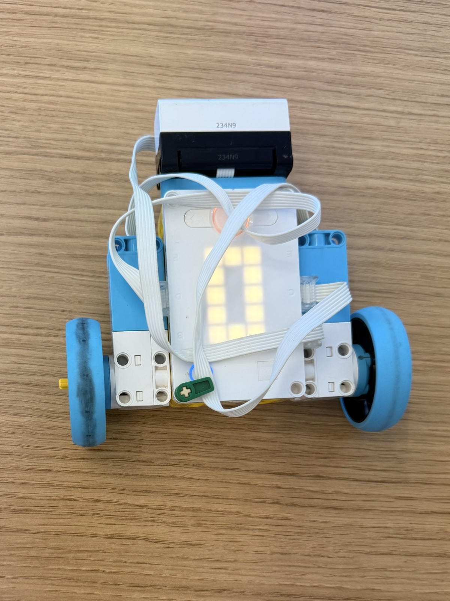

04 M — Sheet 11 / 11
Use an input method to control the motors.

The assignment was to use an input to control the motors. Parviz and I had fifteen minutes. We went with the distance sensor, and what came out is a kamikaze car.
It starts by spinning in place, scanning. The sensor sits at the front, facing forward between the two motors, and the moment something shows up in range the spin stops with the sensor pointed straight at it.
Then it charges. The code turns the distance into a "closeness" number and squares it, so the car starts off gentle and speeds up harder and harder as it gets near. There's a bit of the code that would brake close to the target. It's still there, just commented out. That's the kamikaze part: this car isn't supposed to stop.
# Setup: left drive motor on port C, right drive motor on port D.
# Distance Sensor on port A, facing forward between the motors.
from hub import port
import runloop
import motor_pair
import distance_sensor
SPIN_SPEED = 200 # Motor speed in degrees per second.
DETECTION_DISTANCE = 500 # 50 cm, in millimeters.
STOP_DISTANCE = 0 # 0 mm: don't stop before contact.
START_SPEED = 200 # Forward speed when the object is first detected.
MAX_SPEED = 800 # Fastest forward speed.
async def main():
# Pair the drive motors.
motor_pair.pair(motor_pair.PAIR_1, port.D, port.C)
# Spin in place while looking for an object within 50 cm.
motor_pair.move_tank(motor_pair.PAIR_1, SPIN_SPEED, -SPIN_SPEED)
while True:
distance = distance_sensor.distance(port.A)
if distance != -1 and distance <= DETECTION_DISTANCE:
break
await runloop.sleep_ms(10)
# Stop spinning while the sensor faces the detected object.
motor_pair.stop(motor_pair.PAIR_1)
# Drive toward the object, accelerating as the distance shrinks.
while True:
distance = distance_sensor.distance(port.A)
# Stop if the sensor loses the object or gets very close to it.
#if distance == -1 or distance <= STOP_DISTANCE:
#break
# Squaring "closeness" makes the speed rise increasingly quickly.
closeness = DETECTION_DISTANCE - distance
forward_speed = START_SPEED + (closeness * closeness * 500 // 22500)
forward_speed = min(forward_speed, MAX_SPEED)
motor_pair.move(motor_pair.PAIR_1, 0, velocity=forward_speed)
await runloop.sleep_ms(10)
# Stop driving and free the motor ports.
motor_pair.stop(motor_pair.PAIR_1)
motor_pair.unpair(motor_pair.PAIR_1)
runloop.run(main())